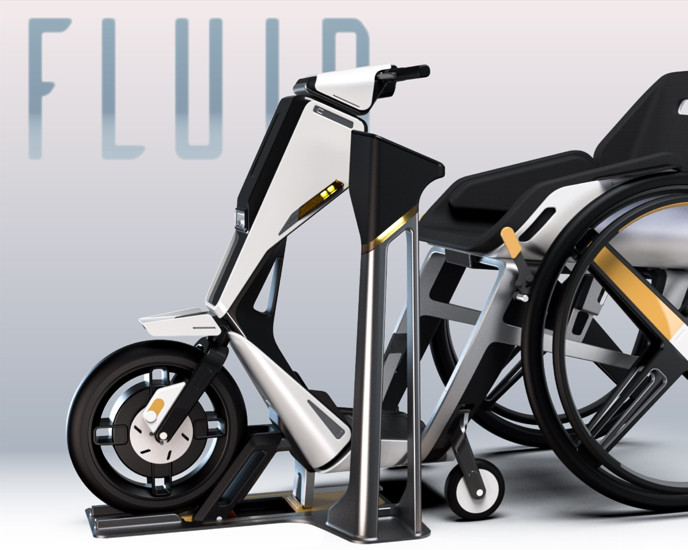
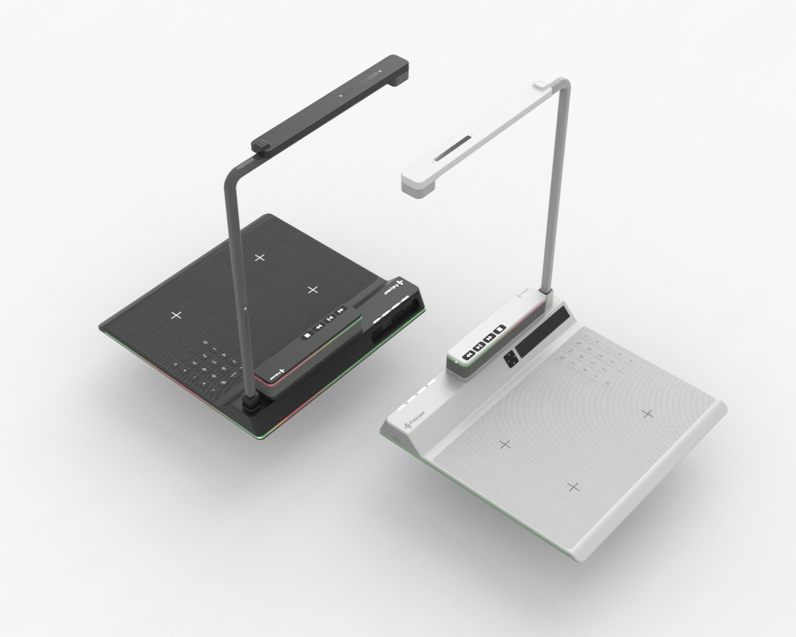

- - -Projects - - -

Workplace
Experience
Experience

STEPON

FLUID

UIUX

Polymer

Other
Works
Works
- - - - Raymund Tsai - - - -
- - -Projects - - -
- - Goal - -
- - - 感覺有點多，但我盡力 - - -
1. 任務指標 (Task Goals)
---
專業證照取得：
完成 Coursera UX 專業證書課程，建立標準化設計流程。
設計系統實作： 掌握 UI/UX 核心運作邏輯與知識。
學術里程碑：
擬定並提交論文第一階段提案，包含問題定義、文獻探討架構與初步研究方法。
2. 策略指標 (Strategic Goals)
---
AI 協作能力： 透過理解基礎前端邏輯（HTML/CSS/JS），提升我與AI編程工具協作的效率。
產業前瞻力： 追蹤 AI 在設計產業的應用趨勢，建立獨特洞察
知識應用轉化：
將 UX 方法論與 AI 論文知識結合，發展出能在未來職場應用的工作流。
3. 個人發展計畫 (IDP)
---
技術補強： 每日透過 W3Schools 進行 1 小時前端基礎訓練，目標是能讀懂組件架構而非死背語法。
文獻深度研究：
每週精讀 2 則 AI 產品協作相關論文或深度科技新聞，並撰寫簡短的心得備忘錄。
方法論重整：
進行個人知識庫大掃除，將過往質性研究、工作流重點模組化，作為未來專案的快速調用手冊。